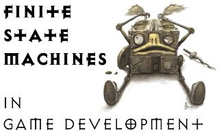
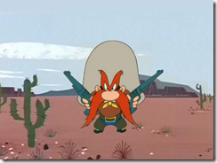
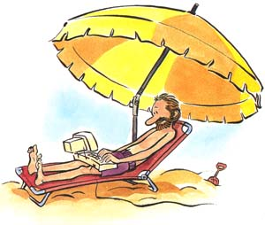

Home
What a state to get into…
- Details
- Published on Wednesday, 27 April 2016 10:57
- Written by Edward Powell
- Hits: 242
This week we are going to be adding our game state code to the basic (and reusable) game loop code from last week. The structure of the code is going to be very simple. In the Update function we are going to choose a particular block of code according to current game state (using the If…, Elif…, Elif…, Else… conditional structure you have encountered previously). Each block of code will check input and game data and simply change the current game state to a new one if necessary. Essentially all of our game logic will be captured in this function – although we will create some other ‘helper’ functions to complete repetitive tasks without having to copy and paste code (if you find yourself doing this, it is a sure sign that your code needs a better structure – time to ‘refactor’).
The Draw code can now be extremely simple. It will just dumbly draw items according to the current game state.
{kind=link}
The diagram above shows a simple design of the 7 new game states we need (not including the existing ‘Quit’ state) and the events we will be looking for in the Update function to trigger transitions between the states. When you design a game you should definitely have something like this diagram early on to help you plan your project – pretty much all games have some sort of state structure within them.
In our simple game, the transition events will either be mouse clicks from the player, or internal timers. The timers will determine how long it takes for Sam to draw his guns, how quickly he fires and also the duration of the animation of firing (essentially how long we remain in the ‘Fire’ game state, where we blit the gun flashes, before moving to the ‘Lose’ game state, where we don’t).
Code Snippets
OK well to be honest that is the hard bit done, the rest is just typing 
Update
The update function captures the diagram above in code form:
def Update():
global current_keys, last_keys, current_mouse, last_mouse, \
gamestate, time_to_draw, time_to_fire, total_time
last_keys = current_keys
current_keys = pygame.key.get_pressed()
last_mouse = current_mouse
current_mouse = pygame.mouse.get_pressed()
elapsed_ms = pygame.time.Clock().tick(30)
total_time = total_time + elapsed_ms
if gamestate == "Start":
if LeftMouseClicked():
gamestate = "Ready"
elif gamestate == "Ready":
if total_time > time_to_draw:
total_time = 0
gamestate = "Draw"
elif LeftMouseClicked():
gamestate = "TooEarly"
elif gamestate == "Draw":
if total_time > time_to_fire:
total_time = 0
gamestate = "Fire"
if LeftMouseClicked():
gamestate = "Win"
elif gamestate == "Fire":
gamestate = "Lose"
elif gamestate == "TooEarly":
if LeftMouseClicked():
Reset()
gamestate = "Start"
elif gamestate == "Win":
if LeftMouseClicked():
Reset()
gamestate = "Start"
elif gamestate == "Lose":
if LeftMouseClicked():
Reset()
gamestate = "Start"
else:
print("Update Error: Unknown gamestate")
Draw
The Draw function simply draws the screen according to the current game state:
def Draw():
global background_surface, screen, sam_surface_set
screen.blit(background_surface, (0,0))
if gamestate == "Start":
DrawTitle("Click to Start")
elif gamestate == "Ready":
DrawSam("Ready")
elif gamestate == "Draw":
DrawSam("Draw")
elif gamestate == "Fire":
DrawSam("Fire")
elif gamestate == "TooEarly":
DrawTitle("You'll hang for this!")
DrawSam("Innocent")
elif gamestate == "Win":
DrawTitle("Got me you varmint")
DrawSam("Shot")
elif gamestate == "Lose":
DrawTitle("Take that!")
DrawSam("Ready")
else:
print("Draw Error: Unknown gamestate")
pygame.display.flip()
return
Additional Helper Functions
To avoid the noob error of cutting and pasting repeated code, and to make the code easier to understand and manage, several additional helper functions are handy to add. The first checks for a mouse click by seeing of the left mouse button is newly pressed – i.e. it is pressed this time around the game loop, but not last time – this prevents a single mouse click triggering loads of mouse click transitions in one go.
def LeftMouseClicked():
global current_mouse, last_mouse
return current_mouse[0] and not last_mouse[0]
Note that this function returns the boolean True or False so you can use it anywhere that python needs a boolean. This is an example of a function with a return type and they are very handy things!
We also can draw a nice centred bit of large text using the DrawTitle function:
def DrawTitle(string):
global big_font, screen
text = big_font.render(string, 1, (255, 128, 128))
shadow = big_font.render(string, 1, (0, 0, 0))
textpos = text.get_rect()
textpos.centerx = screen.get_rect().centerx
shadowpos = shadow.get_rect()
shadowpos.center = (textpos.centerx + 2, textpos.centery + 2)
screen.blit(shadow, shadowpos)
screen.blit(text, textpos)
Finally, Sam himself is represented by a set of surfaces – different ones for the game states. To store these I use a dictionary structure to allow us to get the surface we are after using a nice, friendly, string name. I create this dictionary just once inside the Init function, along with the global fonts used above:
# Load the other sprite images
sam_surface_set = { \
"Ready" : pygame.image.load("images/YosemiteSamReady.png").convert_alpha(), \
"Draw" : pygame.image.load("images/YosemiteSamAim.png").convert_alpha(), \
"Fire" : pygame.image.load("images/YosemiteSamFire.png").convert_alpha(), \
"Innocent" : pygame.image.load("images/YosemiteSamInnocent.png").convert_alpha(), \
"Shot" : pygame.image.load("images/YosemiteSamShot.png").convert_alpha() \
}
# Create some reusable fonts
big_font = pygame.font.Font(None, 72)
little_font = pygame.font.Font(None, 36)
then I use it inside a handy DrawSam function that will draw the correct Sam according to the name that you pass in:
def DrawSam(state_string):
global screen
sam_surface = sam_surface_set[state_string]
target = sam_surface.get_rect()
target.center = screen.get_rect().center
screen.blit(sam_surface, target)
That’s it! In your version of the game try adding some new game states or swap out the images for a different theme of game. Perhaps a high score screen showing the fastest reaction time achieved in this session of the game?
Shootout – Session 1
- Details
- Published on Wednesday, 20 April 2016 08:29
- Written by Edward Powell
- Hits: 259
This week we will be starting a new game – Shootout. It is essentially a reaction time test, but using a western gunfight theme. Yosemite Sam will draw and fire and the player must shoot him after he draws, but before he fires. If you shoot him before he draws then you will surely hang for killing an innocent man, but if you wait too long…
{kind=link}
To tackle this game we will be looking at a really common pattern in computer programming – the finite state machine (or FSM). This is a really useful way of breaking down the computational logic required for many tasks you will encounter.
But before we get onto that, we need to create the usual basic game framework – a loop which cycles updating our game data and drawing the screen. As previously we will break this down into functions that each deal with a specific aspect of the game.
In a new python file, import the libraries we are going to need – pygame, sys and random.
import sys, pygame, random
Now we need to create our function structure.
Init
This function completes all the one-time initialisation of the game. Things that are done once, and only once, when our program is first run – such as creating the game screen window and loading the game assets into memory.
def Init():
global screen, current_keys, current_mouse, \
background_surface, gamestate, \
big_font, little_font
# Initialise pygame - must always be done first
pygame.init()
gamestate = "Start"
# Set the screen size using background image size
background_surface = pygame.image.load("images/Background.png")
screen_size = background_surface.get_size()
screen = pygame.display.set_mode(screen_size)
# Convert the surfaces according to the screen bitdepths
# This will dramatically speed up blitting later
background_surface = background_surface.convert()
# Load a big and little font
big_font = pygame.font.Font(None, 72)
little_font = pygame.font.Font(None, 36)
# Initialise our pressed key list
current_keys = pygame.key.get_pressed()
current_mouse = pygame.mouse.get_pressed()
Reset
This function resets all the properties of our game for each go. Having started the game up, we expect the player to have several go’s and so this function will be called lots of times. Since we haven’t started to create our game yet, this function is empty and we can just use the return keyword. As the game develops, we will add more code here.
def Reset():
return
GameLoop
The main process of repeating the update and draw cycle. This function will only complete and return when we ‘quit’ the game – this is triggered by setting the gamestate variable to “Quit”.
def GameLoop():
global gamestate
while gamestate is not "Quit":
for event in pygame.event.get():
if event.type == pygame.QUIT:
gamestate = "Quit"
Update()
Draw()
# If we get here, we should quit
sys.exit()
Update
This function processes all the changes to the game data in response to time, user input or other events.
def Update():
global current_keys, last_keys, current_mouse, last_mouse
last_keys = current_keys
current_keys = pygame.key.get_pressed()
last_mouse = current_mouse
current_mouse = pygame.mouse.get_pressed()
elapsed_ms = pygame.time.Clock().tick(30)
Draw
This function constructs and draws our screen. As you create more sophisticated game loops, you will find that you will usually call the update and draw functions at different rates so keeping this work logically separate is a good habit to get into.
Call the functions
Finally we need to actually call these functions (remember, they are only defined so far and so won’t actually run), so at the bottom of your file add your calls.
Init()
Reset()
GameLoop()
Now you should be able to F5 and see your window created according to the background image and the loop should run until you close the window. Essentially, this set of code is the basis of any game you may wish to start, so it might be a good idea to keep a copy of it somewhere so you can reuse it easily in the future. Next week we’ll discuss how to structure and begin adding our game logic to this framework.
Summer Term Sessions Start this Week!
- Details
- Published on Tuesday, 12 April 2016 09:19
- Written by Edward Powell
- Hits: 263
I hope you’ve all had a great Easter break and will have plenty of coding projects to discuss! We’ll be beginning something completely new this term so don’t forget:
Wednesday 13 April @ 7pm
See you there!
Quick Skills Builder
- Details
- Published on Wednesday, 02 March 2016 14:50
- Written by Edward Powell
- Hits: 295
After
last week’s Python refresher, those of you who would like to
consolidate the topics we covered can have a crack at this guided
tutorial:
https://www.codecademy.com/courses/python-beginner-en-4XuFm/0/1
We’ll be on hand to discuss the interesting bits and at the end you should have your first fully functional version of a very simple Battleships game – ready for some enhancements and customisation if you finish it with time to spare! More importantly though, you should also have the set of coding concepts we will put to further use with some graphics and pygame next week.